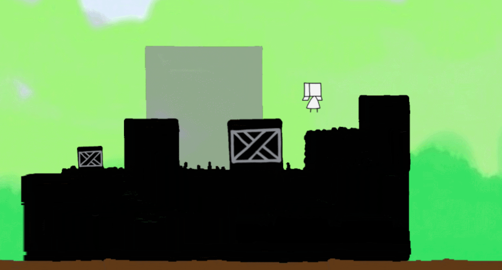
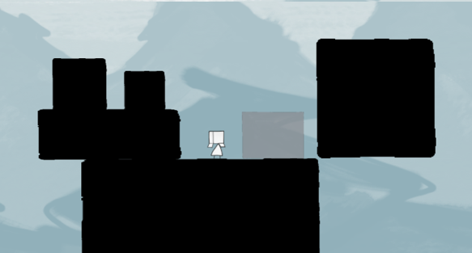
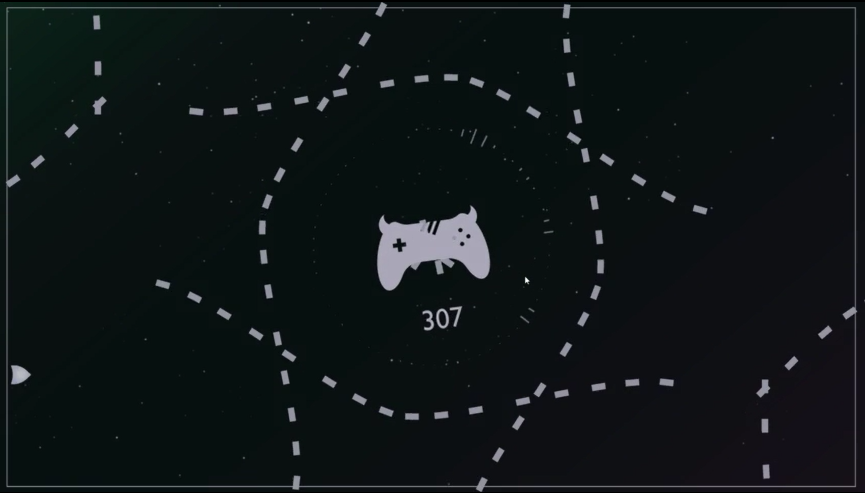
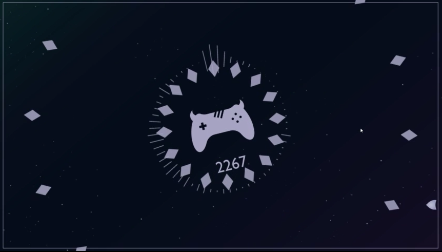
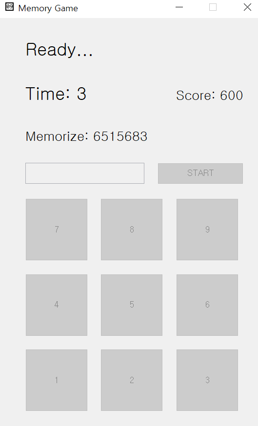
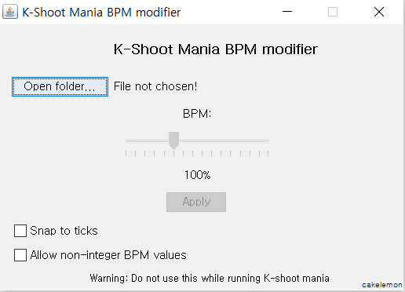

학력
안양 신성고등학교 졸업
서울대학교 공과대학 컴퓨터공학부 17학번 입학
개발 경험
Unity
Reverie(미완성)
물리엔진을 활용한 퍼즐 게임. 3인 팀(주 프로그래머/ UI 프로그래머/ 그래픽)에서 주 프로그래머 담당.
 
TapAvoid
터치로 날아오는 총알을 피하는 모바일 게임. 시간을 느리게 하는 기능이 있다. 2인 팀(주 프로그래머/ UI 프로그래머)에서 주 프로그래머 & 그래픽 디자인 담당.
 
Java Netbeans
메모리 게임
Git 협업을 연습하기 위한 단기 프로젝트. MVC모델이 사용되었으며, 2인 팀에서 view 와 controller 의 개발 담당.

K-shoot Mania BPM 조정 프로그램(1인 개발)
K-shoot mania 라는 리듬게임의 채보파일을 수정해 곡과 맵이 싱크가 맞은 채로 느려지게/빨라지게 할 수 있는 프로그램. 어려운 채보를 연습할 때 주로 사용한다.

자체 개발 프로그래밍 언어
Flagger(1인 개발)
일반적인 프로그래밍 언어와는 달리, 코드가 순차적으로 시행되지 않고 동시에 모두 실행되는 언어. 코드가 배치된 순서를 활용하여 일을 처리하는 대신, 항상 실행되는 코드와 조건이 충족될 동안 실행되는 코드를 활용해 문제를 해결한다. 이때, 실행되는 코드는 순차적으로 시행되지 않고 모두 동시에 실행된다. 실용적으로 활용하기 위한 언어라기보다는, 퍼즐풀이를 위한 언어이다. 인터프리터는 C++로 개발되었다.
<예시 코드>
//CONDITIONS: always, case 'char', meet RoboName, catch FlagName
//ACTIONS: make RoboName, jump Integer, print "string", print_char, put FlagName, destroy, end_program
robo main {
always {
destroy
make A_maker
make START_FLAG
}
}robo START_FLAG{}
robo A {
always {
jump -1
}
case '1' {
print "1"
}
meet START_FLAG {
end_program
}
}알고리즘
학내 동아리 SNUPC의 회원.
삼성 대학생 프로그래밍 경진대회(SCPC) 본선 참여.
활용 가능 언어
능숙: C, C++, C#, Java, Flagger
기본: kotlin, JS, html
라이브러리: RxJava, RxJS
기타
어도비 일러스트레이터 활용 가능(TapAvoid 디자인 담당)
영어를 통한 정보 습득에 능숙